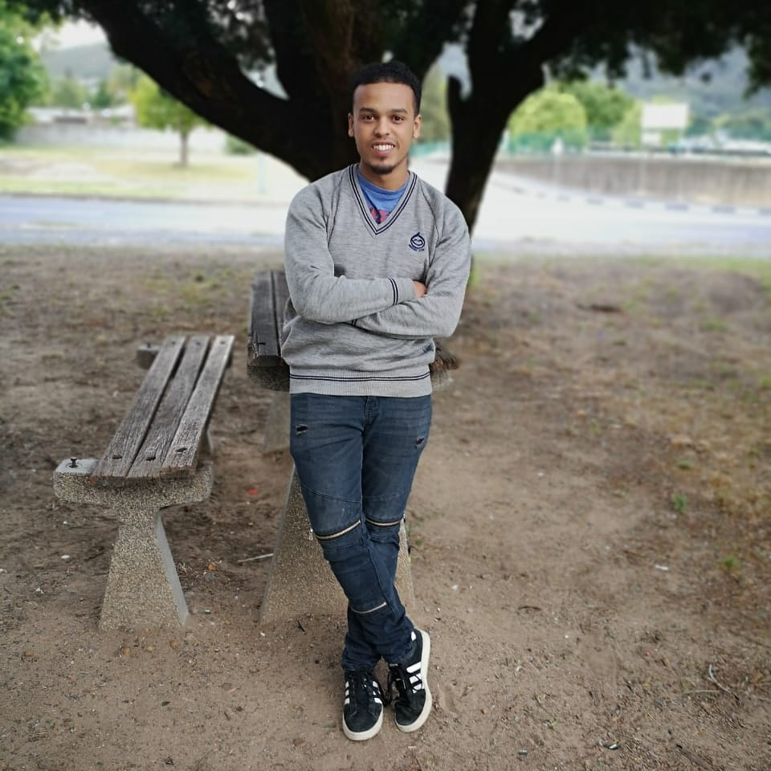

ABOUT
We are only limited to the extend of our imagination
Hi, My name is Jéanan Vermeulen. Born and raised in a small town named Ceres and currently residing in Cape Town. I'm a software developer that started my developing career unknowingly back in high school. Coding Websites in HTML was always the best part of the PAT assignments. A year later I worked as a photographers assistant, where I learned to work with Adobe Products such as Premier Pro, After Effects and Photoshop. Which is why I was able to create the introduction video above. Thereafter I learned more in-depth HTML, JavaScript, JAVA, SQL and PL/SQL over four years at The Cape Peninsula University of Technology. I Also did a learnership Sponsored by Oracle at On The Ball College, where I broadened my knowledge of Java, SQL, and PL/SQL and graduated with a JAVA NQF Level 5 Certificate.
I’ve started doing freelancing websites in 2018 and have experience in developing a variety of programs as well as applications. Currently, I am studying to write my Oracle OCA exam, but enough of that. I pride myself on wanting to be the best. I love learning new things and challenging myself and dedicate myself to deliver the best results to the best of my capability. Planning is everything to me, so invest most of my time in gathering resources and planning exactly what I'm going to do and how I am going to do it. Thus ensuring that there is no space for errors to take place and that the actual execution will not take long or have any problems. Quality is my main objective as I pride myself on my work. I see my work not as something that I have to deliver for someone else, but as a reflection of me.
On The Ball Graduation
CPUT WILL Final Presentation
Jéanan Vermeulen
PORTFOLIO
CLICK ME FOR My Resume
HTML
CSS
JavaScript
Java
SQL
PL/SQL
Adobe Photoshop
Adobe Premiere Pro
PHP

Adobe Projects
The following button is a link to a few projects that I have designed using different Adobe platforms.
Adobe ProjectsVideo introduction
The following button is a link to a introduction video of myself.
Introduction VideoCONTACT
One email away from making your dream a reality, go ahead, click send.
Phone: (+27)762203037
Email: jeananlvermeulen@gmail.com